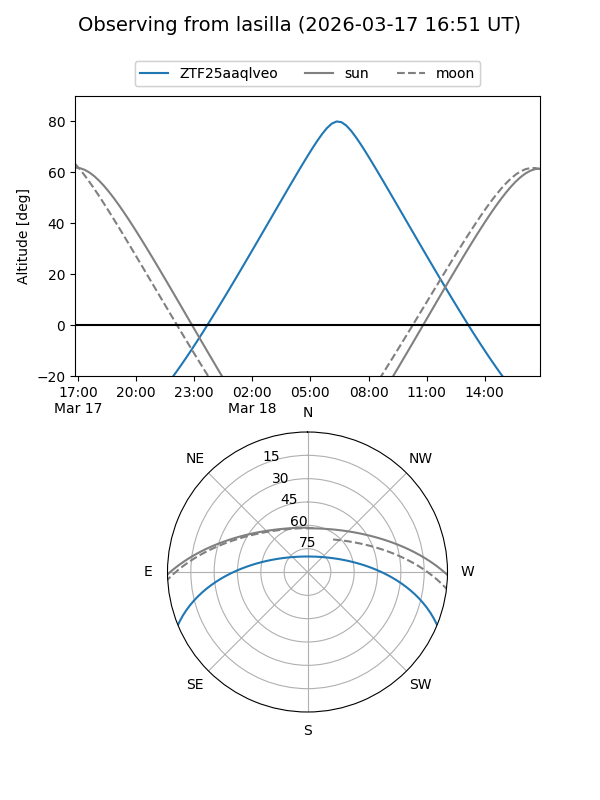
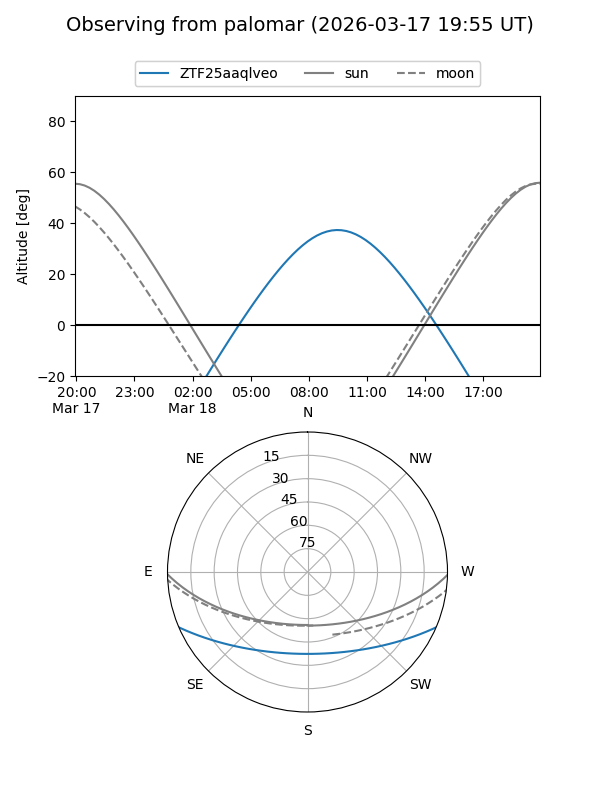

ZTF25aaqlveo
Target ZTF25aaqlveo at 2026-03-17 12:31
Aliases and brokers:
FINK: link
Lasair: link
ALeRCE: link
alt names
ZTF25aaqlveo (ztf,fink_ztf)
Coordinates:
equatorial (ra, dec) = 201.0076,-19.15226
equatorial (HMS+DMS) = 13:24:01.83,-19:09:08.13
galactic (l, b) = (313.4893,+43.05037)
Flags:
Photometry:
last ztfg=18.18
1 ztfg detections
Lightcurve
Visibility


Additional plots